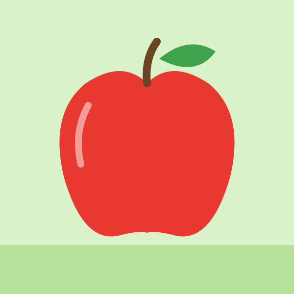
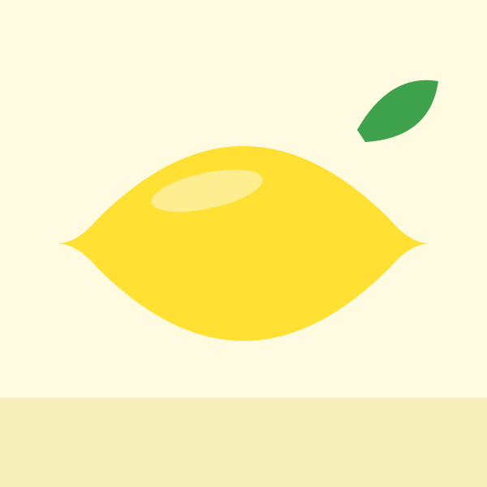
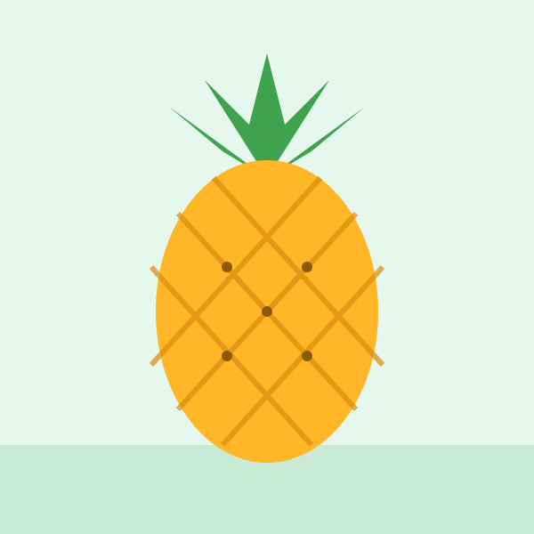
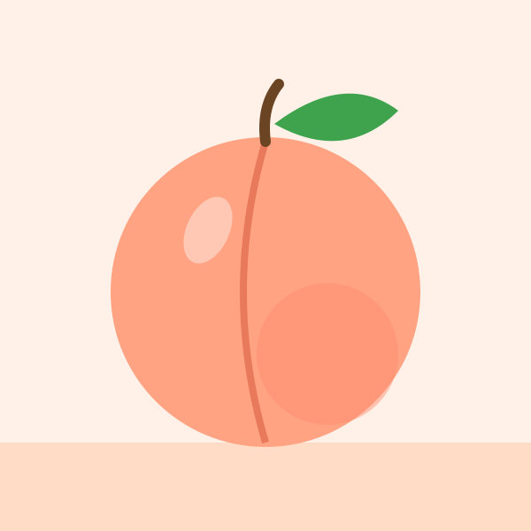
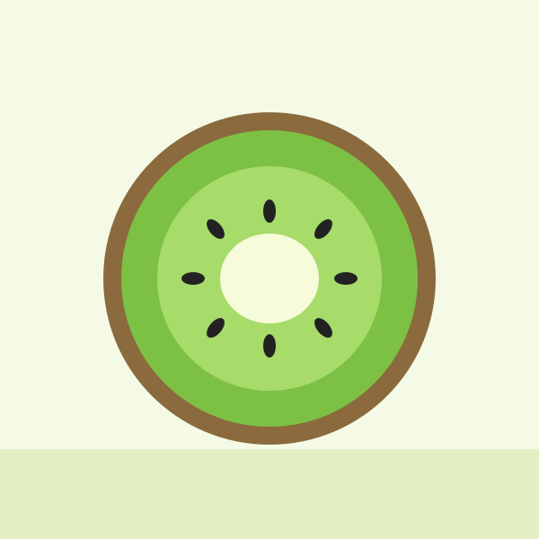
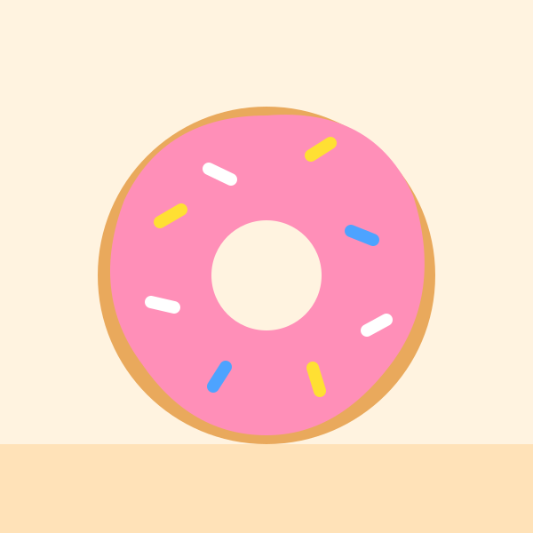
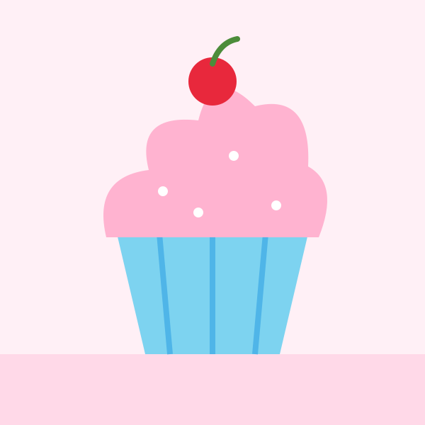
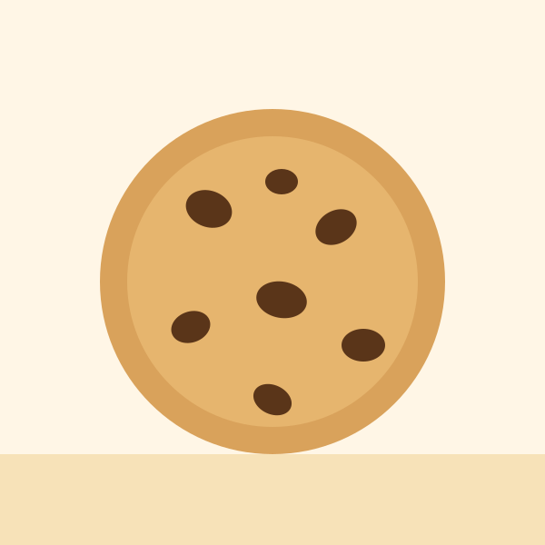

首頁 › 主題 › 水果甜點
🍎 水果甜點拼圖
從蘋果、草莓、西瓜到甜甜圈、杯子蛋糕，這個主題收錄 16 種孩子愛吃的水果與點心。拼圖時順便認識顏色、形狀和食物的名稱。
可以選擇 9、12 或 16 片，並切換拼圖形或方塊，由簡單到困難慢慢挑戰。免費、免註冊。
這個主題裡有什麼？（共 16 張）
點選任一張圖片，就可以直接開始拼。

蘋果 
草莓 
香蕉 
橘子 
西瓜 
葡萄 
冰淇淋 
櫻桃 
檸檬 
鳳梨 
水蜜桃 
奇異果 
藍莓 
甜甜圈 
杯子蛋糕 
餅乾
學習重點
- 認識水果與點心的名稱
- 辨認紅、黃、綠、橘等顏色
- 比較圓形、長條形等不同的形狀
和孩子一起聊聊
拼完之後，可以試著問孩子：
- 它是什麼顏色？摸起來、吃起來是什麼感覺？
- 你吃過哪一種？最喜歡哪一種？
- 水果對身體有什麼好處？